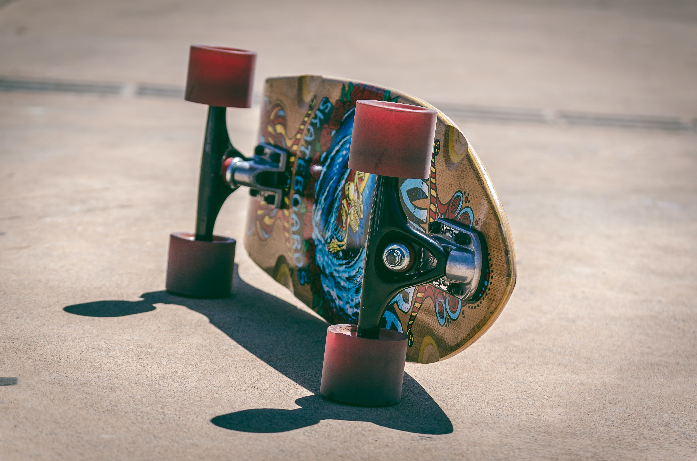

My life and skateboarding
In the late 80s I started skateboarding as a kid. I remember my first skateboard that both my brother and I received from our parents. Mine had a pair of handlebars that screwed into the top of the trucks, it was a "Back to the Future" styled board, as I was about 5 and my brothers was one of those oldschool wide boards with one tail.
As I got closer to my teens I started to take skateboarding more seriously. It was a lifestyle to me. I don't think I owned a pair of jeans for over 8 years as I remmber thinking that skateboarders only whoe Khaki styles pants or cargos.

=
Spending time at the parks was always fun. It was a place to push your boundaries and make new friends.